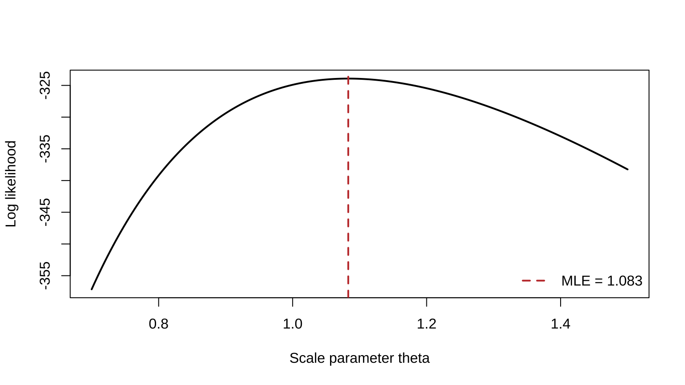

Chapter 7 Point Estimation
This chapter corresponds to chap-7.tex and its three LaTeX fragments. It covers moments, maximum likelihood, Bayes estimation, the EM algorithm, and evaluation by MSE, unbiasedness, the Cramér–Rao bound, Rao–Blackwellization, and loss functions. The source figure is retained, and relevant legacy R code is converted to a stable knitr example with only necessary changes.
7.1 Point estimators and estimates
Definition 7.1 Any sample function
\[W=W(X_1,\ldots,X_n)\]
may be used as a point estimator. Its realized value \(W(\mathbf x)\) is an estimate.
This formal definition does not make every statistic equally useful. Bias, variance, risk, and other optimality criteria determine whether an estimator is attractive.
7.2 Method of moments
For a population with \(k\) unknown parameters \(\boldsymbol\theta=(\theta_1,\ldots,\theta_k)\), define
\[ m_j=\frac1n\sum_{i=1}^nX_i^j,qquad \mu_j(\boldsymbol\theta)=E_{\boldsymbol\theta}(X^j),qquad j=1,\ldots,k. \]
The method of moments solves
\[m_j=\mu_j(\boldsymbol\theta),\qquad j=1,\ldots,k\]
for \(\hat\theta_1,\ldots,\hat\theta_k\).
Example 7.1 If \(X_i\overset{\mathrm{iid}}\sim\operatorname{Bin}(k,p)\) and both \(k,p\) are unknown, then
\[E(X)=kp,qquad E(X^2)=kp(1-p)+k^2p^2.\]
Writing \(v_n=n^{-1}\sum_i(X_i-\bar X)^2\) gives
\[ \hat k_{\mathrm{MOM}}=\frac{\bar X^2}{\bar X-v_n},qquad \hat p_{\mathrm{MOM}}=\frac{\bar X}{\hat k_{\mathrm{MOM}}}. \]
If \(\bar X-v_n\le0\), there is no interior solution in the allowed parameter space. Since \(k\) is integer-valued, neighboring feasible integers must also be compared. This illustrates that moment estimates can be infeasible.
7.3 Maximum likelihood and invariance
The joint likelihood is
\[L(\boldsymbol\theta\mid\mathbf x)=\prod_{i=1}^nf(x_i\mid\boldsymbol\theta).\]
Definition 7.2 For fixed \(\mathbf x\), a parameter value \(\hat{\boldsymbol\theta}(\mathbf x)\) maximizing \(L(\boldsymbol\theta\mid\mathbf x)\) over the parameter space is a maximum likelihood estimator (MLE).
Maximizing \(\ell=\log L\) is usually more stable. An interior candidate satisfies
\[\nabla_{\boldsymbol\theta}\ell(\boldsymbol\theta)=\mathbf0,\]
but boundaries, constraints, existence, and global maximality must still be checked.
Theorem 7.1 Invariance of MLEs. If \(\hat\theta\) is the MLE of \(\theta\), then the MLE of \(\tau(\theta)\) is \(\tau(\hat\theta)\). For a many-to-one transformation, likelihoods are profiled over all parameter values sharing the same transformed value.
The legacy R example used an exponential scale model but evaluated a likelihood that underflows numerically. The same model, sample generation, and grid search are retained below, using log likelihood.
set.seed(7301)
theta_true <- 1.1
n <- 300
x <- rexp(n, rate = 1 / theta_true)
theta_grid <- seq(0.7, 1.5, length.out = 200)
loglik <- -n * log(theta_grid) - sum(x) / theta_grid
theta_hat <- mean(x)
plot(theta_grid, loglik, type = "l", lwd = 2,
xlab = "Scale parameter theta", ylab = "Log likelihood")
abline(v = theta_hat, col = "#C43C39", lty = 2, lwd = 2)
legend("bottomright", sprintf("MLE = %.3f", theta_hat),
col = "#C43C39", lty = 2, lwd = 2, bty = "n")
Figure 7.1: Log likelihood and MLE for an exponential scale parameter
7.4 Two-parameter gamma MLE
For the shape–scale density
\[ f(y;\alpha,\beta)=\frac{y^{\alpha-1}e^{-y/\beta}} {\Gamma(\alpha)\beta^\alpha},\qquad y>0, \]
the log likelihood is
\[ \ell(\alpha,\beta)=-n\log\Gamma(\alpha)-n\alpha\log\beta +(\alpha-1)\sum_i\log y_i-\frac{\sum_i y_i}{\beta}. \]
The score equations give \(\hat\beta=\bar y/\hat\alpha\), while \(\hat\alpha\) solves
\[ \log\hat\alpha-\psi(\hat\alpha) =\log\bar y-\frac1n\sum_i\log y_i, \]
where \(\psi\) is the digamma function. Numerical root finding or joint optimization is normally required.
7.5 Bayes estimation and Beta–Binomial conjugacy
For \(\mathbf X\sim f(\mathbf x\mid\theta)\) and prior \(\pi(\theta)\),
\[ \pi(\theta\mid\mathbf x) =\frac{f(\mathbf x\mid\theta)\pi(\theta)}{m(\mathbf x)},qquad m(\mathbf x)=\int f(\mathbf x\mid\theta)\pi(\theta)\,d\theta. \]
Example 7.2 If \(X_i\sim\operatorname{Bernoulli}(p)\), \(Y=\sum_iX_i\), and \(p\sim\operatorname{Beta}(\alpha,\beta)\), then
\[p\mid Y=y\sim\operatorname{Beta}(y+\alpha,n-y+\beta).\]
Under squared error loss, the Bayes estimator is the posterior mean
\[ \hat p_B=\frac{y+\alpha}{n+\alpha+\beta} =\frac n{n+\alpha+\beta}\frac yn +\frac{\alpha+\beta}{n+\alpha+\beta}\frac\alpha{\alpha+\beta}. \]
It shrinks the sample proportion toward the prior mean.
7.6 The EM algorithm: latent data and basic steps
Let \(\mathbf X\) be observed data, \(\mathbf Z\) missing or latent data, and \(\mathbf Y=(\mathbf X,\mathbf Z)\) the complete data. At iteration \(t\), define
\[ \begin{aligned} Q(\boldsymbol\theta\mid\boldsymbol\theta^{(t)}) &=E_{\mathbf Z\mid\mathbf X,\boldsymbol\theta^{(t)}} \{\log f_{\mathbf Y}(\mathbf Y\mid\boldsymbol\theta)\mid\mathbf X=\mathbf x\}\\ &=\int\log f_{\mathbf Y}(\mathbf y\mid\boldsymbol\theta) f_{\mathbf Z\mid\mathbf X}(\mathbf z\mid\mathbf x,\boldsymbol\theta^{(t)})\,d\mathbf z. \end{aligned} \]
The EM cycle is:
- E-step: compute \(Q(\boldsymbol\theta\mid\boldsymbol\theta^{(t)})\);
- M-step: maximize it to obtain \(\boldsymbol\theta^{(t+1)}\);
- repeat until parameter or objective changes fall below a chosen tolerance.
EM uses the conditional expectation of the complete-data log likelihood. Under standard conditions the observed likelihood does not decrease, but convergence may be to a local maximum or saddle point, so initialization and diagnostics matter.
7.7 EM form for linear regression with missing responses
Consider
\[ \mathbf Y=\mathbf W\boldsymbol\beta+\boldsymbol\varepsilon,qquad \boldsymbol\varepsilon\sim N(\mathbf0,\sigma^2\mathbf I_n), \]
with some responses missing and \(\sigma^2\) treated as known. The E-step objective is
\[ \begin{aligned} Q(\boldsymbol\beta\mid\boldsymbol\beta^{(t)}) &=-\frac n2\log(2\pi\sigma^2)\\ &\quad-\frac1{2\sigma^2}E\{(\mathbf Y-\mathbf W\boldsymbol\beta)^\top (\mathbf Y-\mathbf W\boldsymbol\beta)\mid\mathbf x,\boldsymbol\beta^{(t)}\}. \end{aligned} \]
The M-step gives
\[ \boldsymbol\beta^{(t+1)}=(\mathbf W^\top\mathbf W)^{-1}\mathbf W^\top E(\mathbf Y\mid\mathbf x,\boldsymbol\beta^{(t)}), \]
where
\[ E(Y_j\mid\mathbf x,\boldsymbol\beta^{(t)})= \begin{cases}y_j,&Y_j\text{ observed},\\ \mathbf w_j^\top\boldsymbol\beta^{(t)},&Y_j\text{ missing}. \end{cases} \]
With only responses missing, a fixed design, and ignorable missingness, missing responses add no observed information about \(\boldsymbol\beta\); this example primarily displays the complete-data iteration.
7.8 Mean squared error, bias, and normal variance estimation
Definition 7.3 The mean squared error of \(W\) for \(\theta\) is
\[ \operatorname{MSE}_\theta(W)=E_\theta(W-\theta)^2 =\operatorname{Var}_\theta(W)+\{E_\theta(W)-\theta\}^2. \]
If \(E_\theta(W)=\theta\) for every \(\theta\), then \(W\) is unbiased.
For \(X_i\sim N(\mu,\sigma^2)\), both \(\bar X\) and \(S^2=(n-1)^{-1}\sum_i(X_i-\bar X)^2\) are unbiased, and
\[ \operatorname{MSE}(\bar X)=\frac{\sigma^2}{n},\qquad \operatorname{MSE}(S^2)=\frac{2\sigma^4}{n-1}. \]
The normal-model MLE is \(\hat\sigma^2_{\mathrm{MLE}}=(n-1)S^2/n\). It is biased, but
\[ \operatorname{MSE}(\hat\sigma^2_{\mathrm{MLE}}) =\sigma^4\frac{2n-1}{n^2}<\frac{2\sigma^4}{n-1}. \]
Unbiasedness therefore does not imply smaller MSE. For scale parameters, squared error also changes with measurement units.
7.9 MSE of the binomial Bayes estimator
The sample proportion has MSE \(p(1-p)/n\). Under a Beta prior, \(\hat p_B=(Y+\alpha)/(n+\alpha+\beta)\) has MSE
\[ \frac{np(1-p)}{(n+\alpha+\beta)^2} +\left(\frac{np+\alpha}{n+\alpha+\beta}-p\right)^2. \]
Without specific prior information, the source chooses \(\alpha=\beta=\sqrt{n/4}\), making the MSE constant in \(p\):
\[ \hat p_B=\frac{Y+\sqrt{n/4}}{n+\sqrt n},\qquad \operatorname{MSE}(\hat p_B)=\frac{n}{4(n+\sqrt n)^2}. \]

Figure 7.2: Source-slide comparison of sample-proportion and Bayes-estimator MSE for n=4 and n=400
7.10 Best unbiased estimation and UMVUE
Definition 7.4 An unbiased estimator \(W^*\) of \(\tau(\theta)\) is a uniform minimum variance unbiased estimator (UMVUE) if every other unbiased \(W\) satisfies
\[\operatorname{Var}_\theta(W^*)\le\operatorname{Var}_\theta(W) \quad\text{for every }\theta.\]
Within the unbiased class, MSE equals variance. Finding a UMVUE generally requires an information bound or a complete sufficient statistic.
7.11 The Cramér–Rao lower bound
Theorem 7.2 Under regularity conditions including parameter-independent support, valid differentiation under the integral, and finite variance,
\[ \operatorname{Var}_\theta(W)\ge \frac{\{dE_\theta(W)/d\theta\}^2}{I_n(\theta)}, \qquad I_n(\theta)=E_\theta\left[\left\{\frac\partial{\partial\theta} \log f(\mathbf X\mid\theta)\right\}^2\right]. \]
For iid observations, \(I_n=nI_1\). Under regularity,
\[ I_1(\theta)=-E_\theta\left\{\frac{\partial^2}{\partial\theta^2} \log f(X\mid\theta)\right\}. \]
Example 7.3 For \(X_i\sim\operatorname{Poisson}(\lambda)\), \(I_1(\lambda)=1/\lambda\), so every unbiased estimator obeys
\[\operatorname{Var}_\lambda(W)\ge\lambda/n.\]
The sample mean has variance \(\lambda/n\), attains the bound, and is the UMVUE.
7.12 The irregular uniform model
For \(X_i\sim U(0,\theta)\), the support depends on \(\theta\), so the usual Cramér–Rao theorem does not apply.
Let \(Y=X_{(n)}\). Then
\[f_Y(y\mid\theta)=ny^{n-1}\theta^{-n},\qquad0<y<\theta,\]
and
\[E_\theta(Y)=\frac n{n+1}\theta,qquad \operatorname{Var}_\theta\left(\frac{n+1}{n}Y\right) =\frac{\theta^2}{n(n+2)}. \]
Thus \((n+1)Y/n\) is unbiased. Its apparent violation of a naively calculated bound is explained by
\[ \frac d{d\theta}\int_0^\theta h(x)f(x\mid\theta)\,dx \ne\int_0^\theta h(x)\frac\partial{\partial\theta}f(x\mid\theta)\,dx. \]
7.13 The normal variance bound and attainment
For \(X_i\sim N(\mu,\sigma^2)\), the information bound for an unbiased estimator of \(\sigma^2\) is \(2\sigma^4/n\). Since \(\operatorname{Var}(S^2)=2\sigma^4/(n-1)\), \(S^2\) does not attain this finite-sample bound.
Theorem 7.3 Under the regular Cramér–Rao conditions, an unbiased \(W\) of \(\tau(\theta)\) attains the bound if and only if a function \(a(\theta)\) exists such that
\[ a(\theta)\{W(\mathbf x)-\tau(\theta)\} =\frac\partial{\partial\theta}\log L(\theta\mid\mathbf x). \]
When the normal mean \(\mu\) is known,
\[ \frac\partial{\partial\sigma^2}\log L =\frac n{2\sigma^4}\left\{\frac1n\sum_i(x_i-\mu)^2-\sigma^2\right\}, \]
so \(n^{-1}\sum_i(X_i-\mu)^2\) attains the bound. With unknown \(\mu\), this statistic is unavailable and sufficiency-completeness methods are needed.
7.14 Rao–Blackwell and Lehmann–Scheffé
Theorem 7.4 Rao–Blackwell theorem. If \(W\) is unbiased for \(\tau(\theta)\) and \(T\) is sufficient, then
\[\Phi(T)=E(W\mid T)\]
is unbiased and has variance no greater than that of \(W\) for every \(\theta\).
This follows from total expectation and total variance. Sufficiency ensures the conditional expectation is a statistic rather than a formula containing the unknown parameter.
Theorem 7.5 Lehmann–Scheffé theorem. If \(T\) is complete and sufficient, every unbiased function \(\phi(T)\) is the unique UMVUE of its expectation.
A best unbiased estimator is unique almost surely. Equivalently, an unbiased estimator is UMVUE exactly when it is uncorrelated with every unbiased estimator of zero.
For a \(U(0,\theta)\) sample, \(Y=X_{(n)}\) is complete sufficient, so \((n+1)Y/n\) is the unique UMVUE of \(\theta\).
7.15 Rao–Blackwellization in the binomial model
Let \(X_i\sim\operatorname{Bin}(k,\theta)\) with known \(k\). The target is the probability of exactly one success in a single \(\operatorname{Bin}(k,\theta)\) observation:
\[\tau(\theta)=k\theta(1-\theta)^{k-1}.\]
\(h(X_1)=I(X_1=1)\) is unbiased, and \(T=\sum_iX_i\sim\operatorname{Bin}(nk,\theta)\) is complete sufficient. Hence
\[ \begin{aligned} \phi(t)&=E\{h(X_1)\mid T=t\}=P(X_1=1\mid T=t)\\ &=\frac{k\theta(1-\theta)^{k-1} \binom{k(n-1)}{t-1}\theta^{t-1}(1-\theta)^{k(n-1)-t+1}} {\binom{kn}{t}\theta^t(1-\theta)^{kn-t}}\\ &=k\frac{\binom{k(n-1)}{t-1}}{\binom{kn}{t}}. \end{aligned} \]
The disappearance of \(\theta\) after conditioning demonstrates reduction by sufficiency.
7.16 Loss functions and risk
Common losses are absolute error \(L(\theta,a)=|a-\theta|\) and squared error \(L(\theta,a)=(a-\theta)^2\). The risk of rule \(\delta\) is
\[ R(\theta,\delta)=E_\theta L\{\theta,\delta(\mathbf X)\} =\int_{\mathcal X}L\{\theta,\delta(\mathbf x)\}f(\mathbf x\mid\theta)\,d\mathbf x. \]
If \(R(\theta,\delta_1)<R(\theta,\delta_2)\) for every \(\theta\), then \(\delta_1\) uniformly dominates \(\delta_2\).
Example 7.4 For squared-error estimation of normal \(\sigma^2\), consider \(\delta_b=bS^2\). Its risk is
\[ R((\mu,\sigma^2),\delta_b) =\left\{\frac{2b^2}{n-1}+(b-1)^2\right\}\sigma^4. \]
Differentiating gives \(b=(n-1)/(n+1)\), so
\[\tilde S^2=\frac{n-1}{n+1}S^2 =\frac1{n+1}\sum_i(X_i-\bar X)^2\]
has minimum risk within the class \(\{bS^2:b\ge0\}\).
7.17 Bayes risk and two Bayes rules
The prior-averaged risk is
\[r(\pi,\delta)=\int_\Theta R(\theta,\delta)\pi(\theta)\,d\theta.\]
Using \(f(\mathbf x\mid\theta)\pi(\theta)=\pi(\theta\mid\mathbf x)m(\mathbf x)\),
\[ r(\pi,\delta)=\int_{\mathcal X} \left[\int_\Theta L\{\theta,\delta(\mathbf x)\} \pi(\theta\mid\mathbf x)\,d\theta\right]m(\mathbf x)\,d\mathbf x. \]
Thus minimizing posterior expected loss pointwise gives:
- posterior mean under squared error;
- any posterior median under absolute error.
7.18 Normal–normal Bayes estimation
If \(X_i\sim N(\theta,\sigma^2)\) and the prior is \(\theta\sim N(\mu,\tau^2)\), with \(\sigma^2,\mu,\tau^2\) known, then
\[ E(\theta\mid\bar x) =\frac{\tau^2}{\tau^2+\sigma^2/n}\bar x +\frac{\sigma^2/n}{\tau^2+\sigma^2/n}\mu, \]
\[ \operatorname{Var}(\theta\mid\bar x) =\frac{\tau^2\sigma^2/n}{\tau^2+\sigma^2/n}. \]
The posterior is normal, so its mean equals its median. Therefore squared and absolute error produce the same Bayes estimator in this example.
7.19 Chapter summary
- Moments match sample and population moments; maximum likelihood selects the parameter best supporting the observed sample.
- Bayes estimation combines prior and likelihood; EM optimizes through expected complete-data log likelihood.
- MSE trades bias against variance; under unbiasedness one can seek a UMVUE.
- The Cramér–Rao bound requires regularity, while Rao–Blackwellization and complete sufficiency offer a broader improvement route.
- Loss and risk define what “best” means; different losses can yield different Bayes rules.
Source-slide references: Casella, G. and Berger, R. L. (2002), Statistical Inference, 2nd ed., Chapter 7; Dempster, A. P., Laird, N. M. and Rubin, D. B. (1977), “Maximum Likelihood from Incomplete Data via the EM Algorithm,” Journal of the Royal Statistical Society, Series B, 39, 1–38.